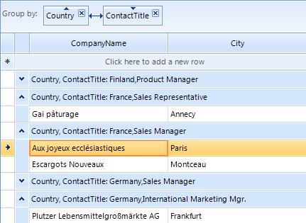

Setting Groups Programmatically
Overview
RadGridView has a GroupDescriptors property at the GridViewTemplate level which is exposed in RadGridView class
for MasterTemplate instance. This collection allows you to use descriptors which define the grouping criteria and the group's sorting
direction for the data that is bound to the RadGridView.
As this is a collection, you are able not only to add, but to remove or clear the its entries as well.
Adding descriptors to the collection makes the current view display the items sorted and divided into groups.
Using GroupDescriptors
[C#] Using simple group descriptor
GroupDescriptor descriptor = new GroupDescriptor();
descriptor.GroupNames.Add("Country", ListSortDirection.Ascending);
this.radGridView1.GroupDescriptors.Add(descriptor);
[VB.NET] Using simple group descriptor
Dim descriptor As New GroupDescriptor()
descriptor.GroupNames.Add("Country", ListSortDirection.Ascending)
Me.RadGridView1.GroupDescriptors.Add(descriptor)

The GroupNames property defines the property, by which the data will be grouped. The GroupName is a SortDescriptorCollection and defines group names for one grouping criteria.
RadGridView supports grouping using one or more property names. The following example demonstrates how you can group by two properties:
[C#] Grouping by more than one column name
GroupDescriptor descriptor1 = new GroupDescriptor();
descriptor1.GroupNames.Add("Country", ListSortDirection.Ascending);
descriptor1.GroupNames.Add("ContactTitle", ListSortDirection.Descending);
this.radGridView1.GroupDescriptors.Add(descriptor1);
[VB.NET] Grouping by more than one column name
Dim descriptor1 As New GroupDescriptor()
descriptor1.GroupNames.Add("Country", ListSortDirection.Ascending)
descriptor1.GroupNames.Add("ContactTitle", ListSortDirection.Descending)
Me.RadGridView1.GroupDescriptors.Add(descriptor1)

RadGridView supports grouping on one or more levels. The following example demonstrates how you can group on two levels:
[C#] Grouping on one or more levels
GroupDescriptor descriptor2 = new GroupDescriptor();
descriptor2.GroupNames.Add("Country", ListSortDirection.Ascending);
GroupDescriptor descriptor3 = new GroupDescriptor();
descriptor3.GroupNames.Add("ContactTitle", ListSortDirection.Ascending);
this.radGridView1.GroupDescriptors.Add(descriptor2);
this.radGridView1.GroupDescriptors.Add(descriptor3);
[VB.NET] Grouping on one or more levels
Dim descriptor2 As New GroupDescriptor()
descriptor2.GroupNames.Add("Country", ListSortDirection.Ascending)
Dim descriptor3 As New GroupDescriptor()
descriptor3.GroupNames.Add("ContactTitle", ListSortDirection.Ascending)
Me.RadGridView1.GroupDescriptors.Add(descriptor2)
Me.RadGridView1.GroupDescriptors.Add(descriptor3)